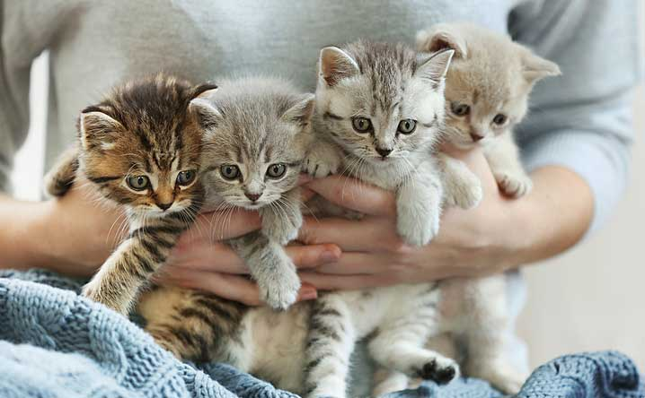
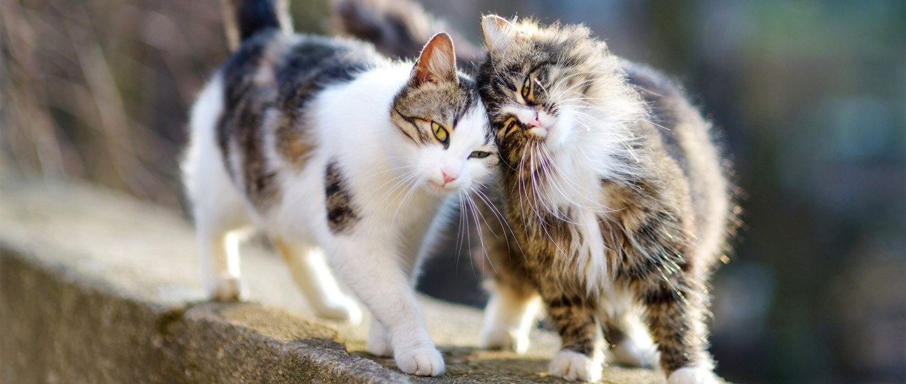
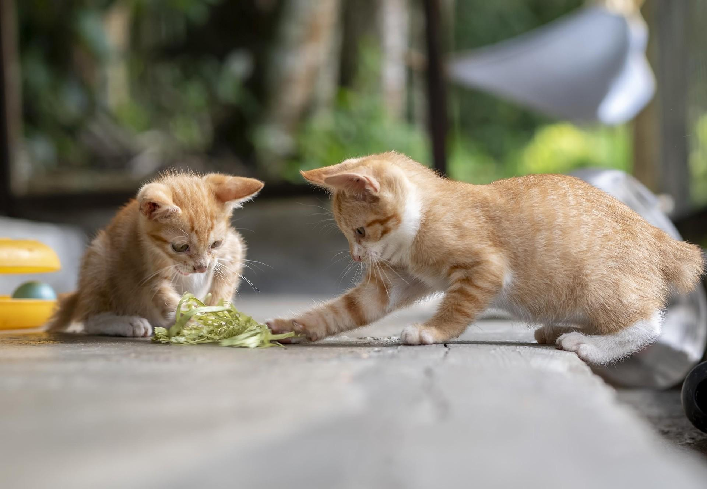

Refugio Narices Frias es una organización sin fines de lucros, creada por Mengano y Menganita en el año 2022 en el barrio de Vicente Lopez.

Nuestro objetivo es disminuir la poblacion de gatos salvajes en el barrio rescatando gatos de la calle, para luego procurar su adopcion responsable, y capturando a los ferales para gestionar su castracion y devolverlos a su zona en caso de no lograr sociabilizarlos.

En caso de querer adoptar, podes dirigirte a "conocenos" para ver nuestros felinos disponibles. Es muy importante que leas atentamente los requisitos, ya que son los que consideramos necesarios para mantener a los animales felices, seguros y fuera de las calles.

Como ya mencionamos anteriormente, RNA es una organizacion sin fines de lucro. En caso de querer realizar una donacion de materiales, estamos encantados de recibirla. Para gestionarlas, podes dirigirte a LINK o hablarnos por wpp (encontrarás el icono en el costado inferior derecho de la web).
>
<